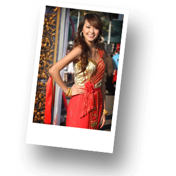

Традиционная одежда Таиланда
В современном обществе редко можно встретить людей в национальных костюмах и одеждах, разве что на окраине страны или в деревнях. Сегодная тайцы одеваются в общепринятом европейском стиле. В недалеком было присуще тайцам внешнее своеобразие, создаваемое одеждой и прической.
Традиционной одеждой мужчин и женщин в Центральном Таиланде до недавнего времени был панунг – кусок ткани, оборачиваемый вокруг бедер. Один его конец пропускали между ног и закрепляли сзади на поясе. Верхнюю часть тела мужчины закрывали распашными куртками, женщины повязывали на груди шарф, оставляя одно или оба плеча открытыми.
На севере и северо-востоке Таиланда панунг носили только мужчины, а женщины носили узкую юбку – пасин и шарф на груди, конец которого перекидывали через плечо. Пасины отличались по цвету и расположению полос на ткани (на севере ткань имеет горизонтальные, на северо-востоке – вертикальные полосы). Различались пасины и окраской. Для пасинов женщин были характерны чередующиеся полосы красного, белого и черного цветов.
Таким образом, можно сказать, что одежда, особенно женская, играла роль этнического признака и позволяла довольно безошибочно установить принадлежность человека к той или иной тайской народности или этнической группе.
Молодые женщины закрывали грудь шелковым шарфом. От солнца и мужчины и женщины прятали головы под шляпы, плетенные из пальмовых листьев. На церемониях и при визитах к «высшим» надевали шелковый шарф на талию. Придворные облекались в одежды с богато украшенными рукавами. Дети украшали руки и ноги золотыми и серебряными кольцами. Девочки на талии носили тесемки с «сердцем» из золота или серебра. На шею детям вешали амулеты в виде пластинок против негативных духов. Мужчины подвешивали амулет от негативных духов (металлический шарик) к поясу.
В наши дни в городах традиционная одежда вытесняется западной. В деревнях мужчины подпоясываются широким поясом, который имеет до 20 различных функций – от платка до палатки. Плотно обернутый вокруг бедер, он заменяет купальный костюм. Женщины в деревнях, раньше не стеснявшиеся обнаженного торса и покрывавшие грудь только шарфом, сейчас носят жакеты (наподобие мужских) и пасин. Ходят босыми, но люди знатные – в обуви. Входя в дом, ее обязательно снимают.
Обуви деревенское тайское население , как правило, не носит. Изредка (отправляясь в город, например) они надевают самодельные деревянные башмаки или покупные резиновые, возможно, кожаные сандалии.
До конца XIX – начала XX в. женская прическа отдельных народов Таиланда сохраняла местную специфику. В северных районах женщины собирали волосы на затылке в узел. В отличие от них женщины Центрального и Северо-Восточного Таиланда коротко стригли волосы. Существует мнение, что обычай стричь волосы в Сиаме восходит ко времени осады Аютхаи бирманцами , когда женщины будто стремились ввести врага в заблуждение относительно численности войск и специально остригли волосы, чтобы придать себе внешнее сходство с мужчинами. Теперь женщины и девушки охотно завивают волосы. Головы защищают от солнца шляпами, плетенными из соломы, пальмовых листьев, расщепленного бамбука. Женщины любят металлические украшения: кольца, браслеты, серьги, ожерелья.
До начала нынешнего века мужчины Северного и Северо-Восточного Таиланда татуировались. До последнего времени смысл татуирования состоял в том, чтобы проявить выдержку и доказать свое мужество, иными словами, завоевать право считаться взрослым мужчиной. С другой стороны, считалось, что татуировка оказывает магическое влияние на человека, например изображение льва наделяет человека силой и храбростью этого животного.
В прошлые века знатные сиамцы отращивали на пальцах рук длинные ногти. Этот обычай сохраняется и по сей день. Излишне длинный ноготь на мизинце офицера полиции или правительственного чиновника является символом его высокого социального положения и свидетельствует о том, что данная персона не занята физическим трудом.